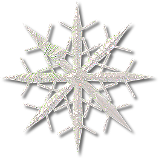

<!DOCTYPE html>
<html>
<head>
<meta charset="UTF-8">
<title>下雪了</title>
<script type="text/javascript" src="../js/jquery-1.4.2.js"></script>
<script type="text/javascript">
	setInterval(function(){
		//得到窗口的宽高
		var w = document.body.parentElement.clientWidth;
		var h = document.body.parentElement.clientHeight;
		//alert(w+""+h)
		//创建雪花图片
		var snow =$("");
		//设置随机的雪花宽高 20-40
		var size = Math.floor(Math.random()*21)+20+"px";
		//设置随机的横向位置
		var left = Math.floor(Math.random()*w)+"px";
		//设置随机的横向位置
		snow.css({"width":size,"height":size,"left":left,"top":"0","position":"absolute"});
		//添加到body里面
		$("body").append(snow);
		//让图片从当前位置移动到窗口最下面
		var time = Math.floor(Math.random()*5000)+3000;
		snow.animate({"top":h-parseInt(size)+"px"},time).fadeOut(1000,function(){
			$(this).remove();
		});
	},10)
</script>
<style type="text/css">
	body{
		background-color: black;
		overflow:hidden;
	}
</style>
</head>
<body>
	
</body>
</html>